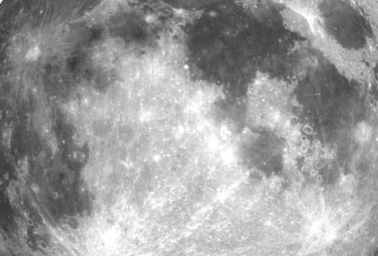

			
			
			<canvas id="ooga" width="800px" height="300px" onclick="fun()"></canvas>
			

			<p id="izpis" value="yeet"></p>
		</div>
	</div>
	<br>
	<script type="text/javascript">
		var c = document.getElementById("ooga");
		var ctx = c.getContext("2d");
		var img=document.getElementById("moon");
		var pat = ctx.createPattern(img, "no-repeat");
		ctx.scale(1,1);
		ctx.beginPath();
		ctx.lineJoin = "round";
		ctx.moveTo(160, 40);
		ctx.bezierCurveTo(110, 120, 130, 180, 225, 155);
		ctx.lineTo(755,15);
		ctx.lineTo(200,250);
		ctx.bezierCurveTo(20, 300, 40, 150, 160, 40);
		ctx.fillStyle=pat;
		ctx.fill();
		ctx.stroke();
	</script>
	<svg id="klux" width="800px" height="300px" xmlns="http://www.w3.org/2000/svg">
		<g fill="#990033" stroke="#000000">
			<path  stroke-width="4" d="
				M 160 40 
				C110 120, 130 180, 225 155 
				L 755 15
				L 200 250
				C20 300,40 150, 160 40"/>
		</g>
	</svg>